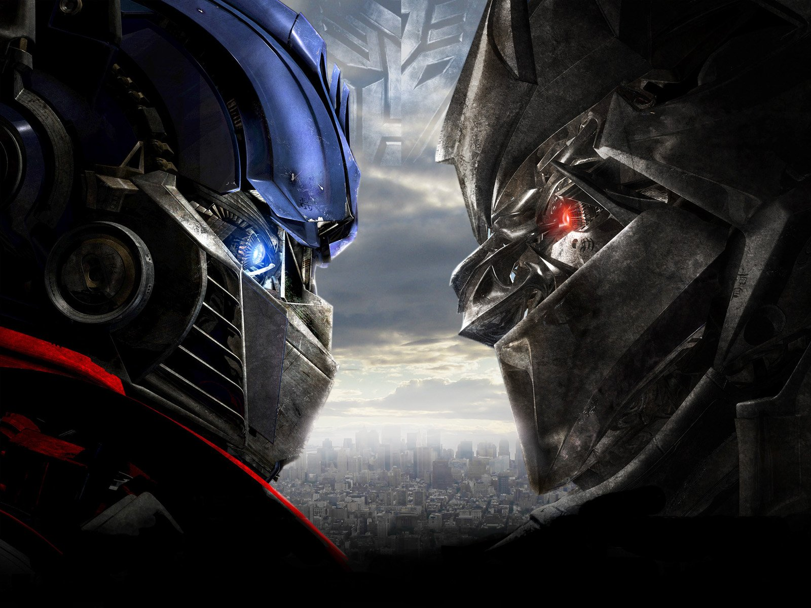
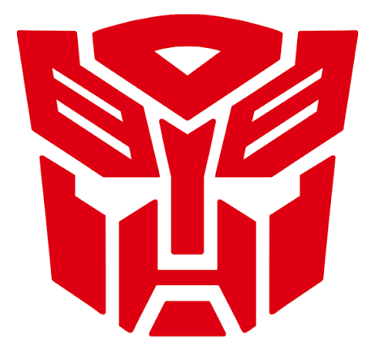
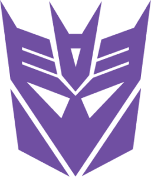
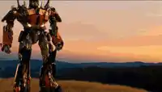
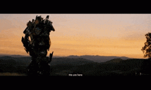
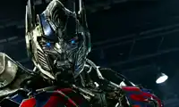

OPTIMUS PRIME
Líder dos Autobots. Antes Orion Pax, foi escolhido pela Matriz. Luta pela liberdade de todos.
A batalha eterna pela liberdade
No princípio, havia dois seres supremos:
Primus — a ordem e a vida.
Unicron — o caos e a destruição.
Primus se transformou no planeta Cybertron, e dele nasceram os Transformers. Por muito tempo viveram em harmonia.
Em Cybertron vivia Orion Pax, um arquivista pacífico que amava a história. Em outra parte do planeta vivia D-16, um gladiador que lutava por justiça.
Eles se tornaram grandes amigos e sonharam juntos com um mundo melhor. Acreditavam que podiam mudar Cybertron lado a lado.

Com o tempo, D-16 passou a acreditar que apenas a força resolveria tudo. Orion discordava — achava que podiam vencer sem violência.
A raiva cresceu nele. Abandonou o nome D-16 e virou Megatron. Fundou os Decepticons, prometendo poder e dominação.
Quando Megatron revelou seus planos de conquistar tudo pelo medo, Orion tentou impedi-lo e foi gravemente ferido.
Sua coragem e bondade foram reconhecidas. A Matriz da Liderança o escolheu. Ele foi reconstruído e transformado em Optimus Prime.
Reuniu aqueles que amavam a liberdade e fundou os Autobots.

Líder dos Autobots. Antes Orion Pax, foi escolhido pela Matriz. Luta pela liberdade de todos.
O mais jovem e ágil. Leal, corajoso e otimista, está sempre disposto a arriscar tudo.
Um Autobot cheio de estilo que admira a cultura humana e enfrenta os desafios com determinação.

Antes D-16. O desejo de poder o corrompeu. Ex-amigo de Optimus, agora é seu maior inimigo.
Comandante aéreo ambicioso e traiçoeiro, que sonha em tomar o lugar de Megatron.
Espião silencioso e leal a Megatron, sempre atento a tudo o que acontece.
Passe o mouse ou toque em uma frase para ver a imagem.



